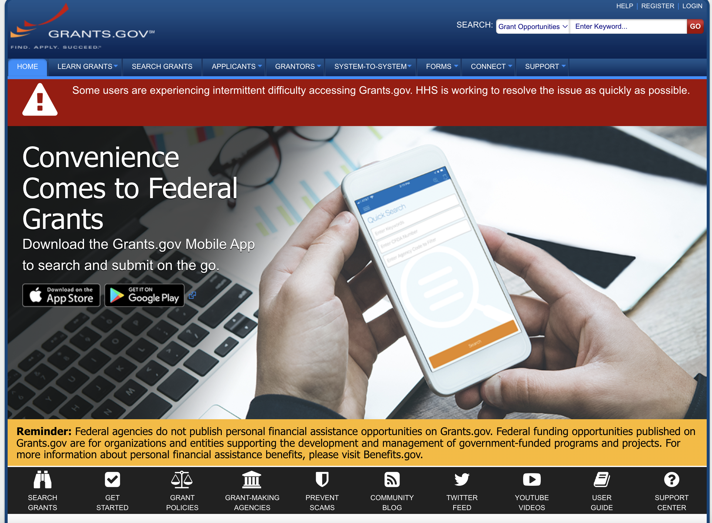
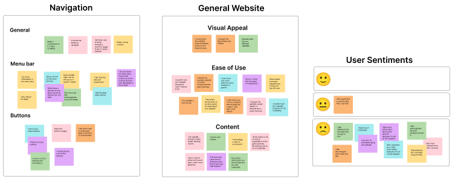
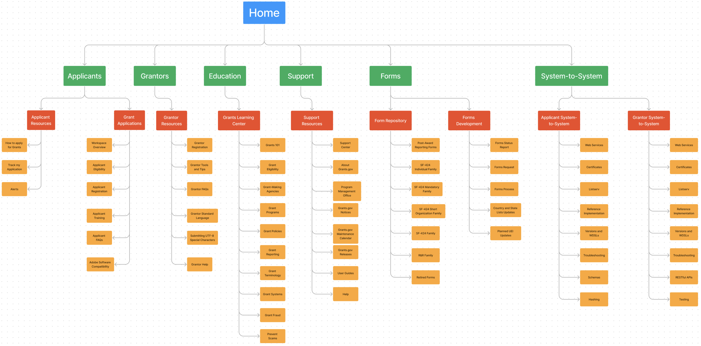
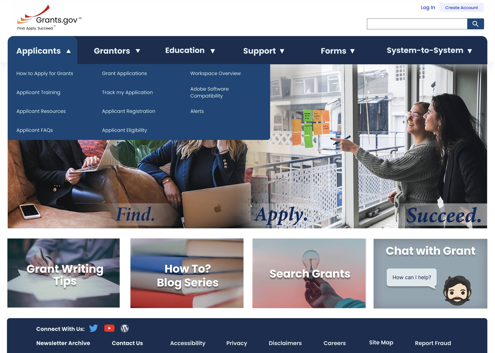

The Problem
The grants.gov website looks outdated, and has too much information all in one place.
The Solution
A completely responsive website redesign, to make it look more modern and aesthetically pleasing. Presenting the information in ‘bite sized’ pieces to make it easier for people to understand.

Research
We started with a heuristic evaluation of the site. The main points we looked at were a pleasing color scheme, appropriate use of white space, consistent design, minimal text/information presented, limited number of buttons and links, and contact information is easy to find. We then did benchmark user tests where we asked the users to compleat a simple task. The tast was to navigate through the site, and try to apply for a grant.

Research Results
From the heuristic evaluation we learned that the site could be simplified for a friendlier user experience. The site overall is doing well at providing areas of assistance for the users. The navigation can be confusing making the site frustrating to use.
The user tests provide helpful insights. The main positives were the site looks offical, has lots of information, and has videos to learn more about grants. The main pain points the site is confusing and frustrating to use, to much information all in one place, and the user could not figure out how to apply for a grant.

Prototyping
Using figma we prototyped a solution with all of the insights that we gained from the research. We created a clean white header where the grants.gov logo, create account button, and login button can be found. We prototyed a simplified navigation that breaks the information down into "bite sized" peices for a more user friendly experience. Overall we improved the navigation, clarified and broke down the information to make it less overwhelming for the user, and created and up-to-date aesthetic.
Gallery

{kind=link}
{kind=link}
{kind=link}
{kind=link}
{kind=link}
{kind=link}